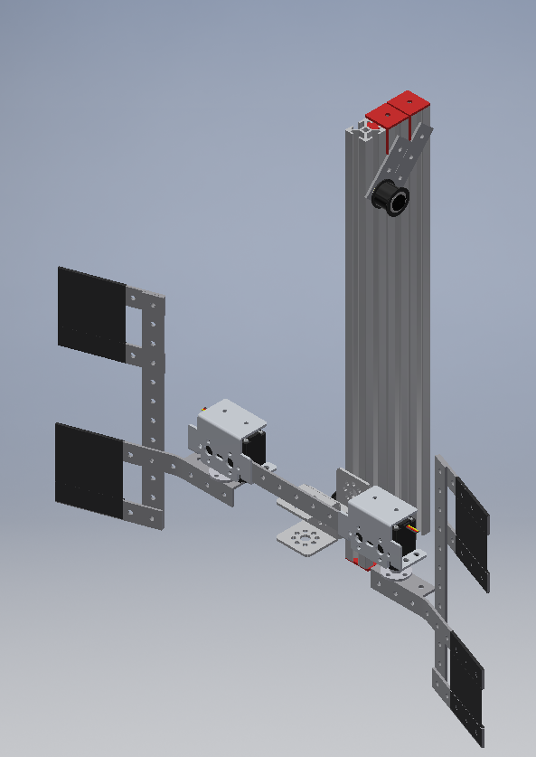
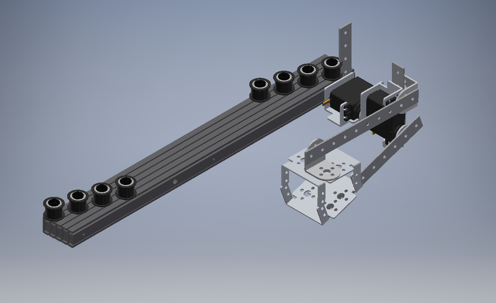
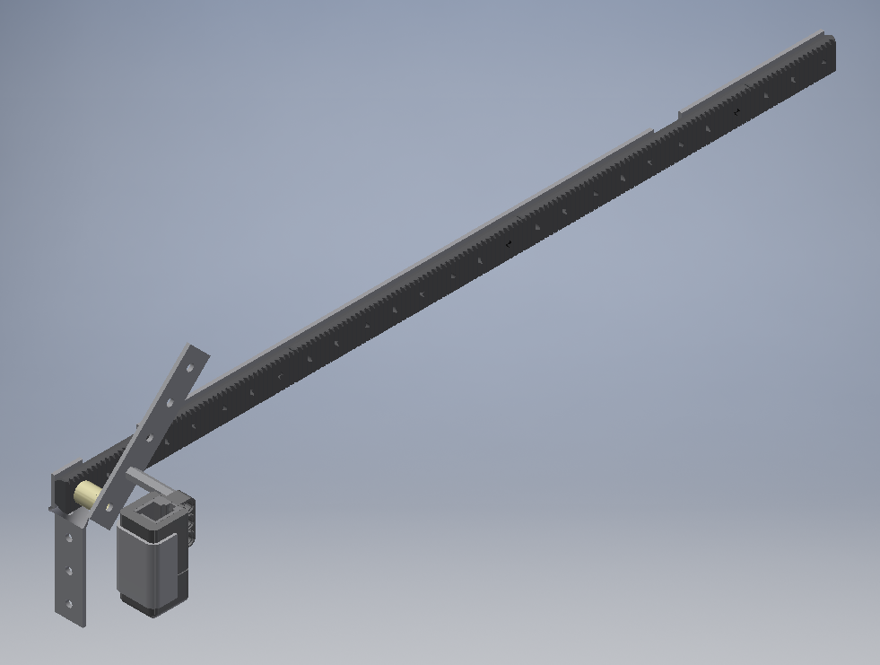

The RoboWarriors' robot was built using four subteams- Electrical, Mechanical, Programming, and Communications. Each subteam had to communicate extensively with other subteams in order to be able to form their own components and combine them together to work as one robot. Below is a description of what each of the subteams have done:
Programming
This year, our programming team set out with a goal to complete every possible action during the autonomous period. We are able to identify the correct jewel and knock it off the platform. In addition, we can read the pictograph and deposit the glyph that is in the correct column to get maximum points. Finally, we can also park in the safe zone. We hope to achieve all of these consistently, as this is where we plan to get the majority of our points.
Not only did we work towards a perfect autonomous period, but we also spent many hours perfecting the TeleOp functionality. This year, our team decided to use mecanum wheels on the robot. Our Driver-Control code converts X and Y values from the controller joysticks into angle vectors for the motors to use for omnidirectional strafing. To ensure ease of use for our drivers, we also implemented a pivoting toggle button, which allows the robot to pivot around a point 5 centimeters in front of it. Additionally, we implemented a key-combo mechanic that allows for more refined speed control, specifically, we can switch into three levels: slow, normal, and fast. Under normal, which is our default speed, the maximum motor power is 50%. Under slow, triggered by holding the left trigger, the maximum motor power is 30%, and under fast, triggered by the right trigger, the maximum power is 100%. All of these powers are used as multipliers, so everything is scaled with the speed change.
Electrical
The electrical subteam is primarily tasked with ensuring that the robot is safely and properly wired. This is achieved by creating a unified electronics module that holds all required components in a central, easy to access location. This year, the subteam faced the challenge of wiring many end-mounted components that will expand during a match. This has been achieved in a variety of ways, from wire back-tracking to rubber tensioners that draw in dangling cables.
Communications
The communications team is in control of putting together an engineering notebook and organizing outreach. Recently we have been trying to connect to our community s much as possible. One way of doing this have been to visit nearby elementary and middle schools to show them our robot and perhaps get them more interested in STEM. We’ve also participated in the CyberSeniors program, in which we teach older people essential computer skills.
In order to create an accurate engineering notebook that reflects the work of the other teams, communications members have been working with other subteams, especially mechanical. Our engineering notebook also uses entries submitted by other teams for a more in-depth view of each project team.
Mechanical
Our robot consists of multiple components each designed to perform one function. The main mechanical components are:
Glyph Lifter (Glyphter) – grips and lifts foam cubes called glyphs. In the playing field, the glyphs are transported to a structure called the cryptobox where they are scored for points. This structure functions only during the driver-controlled period. The glyph lifter consists of two rotating arms which can grip up to 2 glyphs. They are then raised by a vertical linear slide mechanism.

Relic Gripper – grips and carries a plastic figure called a relic. In the playing field, the relic slide is extended around 4 feet outside the walls of the playing field, where the relic is released, standing upright. This structure functions only during the driver-controlled period. The relic gripper consists of two small arms that clamp down on the relic. These two gripping arms are mounted on a servo which enables the gripper to pivot. The entire structure is extended by a horizontal linear slide mechanism.

Glyph Pusher (Auton Glyphter) – pushes a pre-loaded glyph out of the robot into the cryptobox. This structure functions only during the autonomous period. This structure consists only of a Y-piece which extends out and pushes out the glyph.

Contact Us
Feel free to send us a message about any questions you may have!